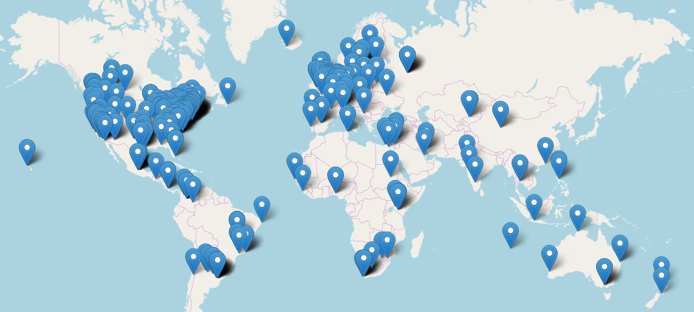

Women Working in the Open
FUCK YEAH OA WOMEN is a website which contains a searchable, sortable list of women who do work in the field of openness: open access, open science, open scholarship, open source code, open data, open education resources -- anything open. There is also a map available for folks who would like to look for women leaders nearest them -- the hope is that this map makes planning conferences, workshops, and events more convenient.
The idea for this website first started on Twitter, where Lenny Teytelman reached out to the larger Twittersphere to ask for recommendations of women who work in open access and open science:
Please recommend women leaders in the Open Access/Science area. Too many conferences/boards feel like openness in science is only for men.
— Lenny Teytelman (@lteytelman) June 20, 2017
The thread goes on for ages until April Hathcock (Scholarly Communications Librarian, New York University) wrote a blog post in which she discusses how lists and visibility are always great, but we need to start putting them into action -- in this case, inviting more women speakers. She also released an accompanying open google doc which had a list of women who work in the open which anyone can add names to.
I went ahead and blogged about this and created an open list. Add names. You're welcome. https://t.co/qFTngfevlI https://t.co/h8yxcUFChB
— April H. (@AprilHathcock) June 20, 2017
I took April's google doc and made this website, transforming the doc into a searchable, sortable list and a map. The data here is licensed as CC0, and the code is 100% open source and openly licensed. The code is available in a Gitlab repository for anyone who would like to report a bug (as an issue, please!), make a merge request of any fixes, additions, or deletions, or to integrate into your database of speakers (underlying data is also in Gitlab).
Image taken from on fyoaw.vickysteeves.com/map.html on June 14, 2017.
I built the website based on a lot of free and open source software and code. I built the website using Bootstrap3, the open source toolkit for developing with HTML, CSS, and JS. I modified the Flatly theme from Bootswatch for the website aesthetics, only changing it to make it purple rather than green (I just like the purple better, ok?). This site would have required SO MUCH MORE coding on my part if it wasn't for the code called 'CSV to HTML table' by Derek Eder, available here: https://github.com/derekeder/csv-to-html-table. This let me easily plug in a CSV file to a website and get a nice searchable, sortable list. The map was built using leaflet open source JavaScript library used to build interactive maps on the web. I cleaned up the data using OpenRefine and their excellent Geocoding wiki.
All this to say -- YES open code, YES open data, and YES to all the wonderful women working towards openness!